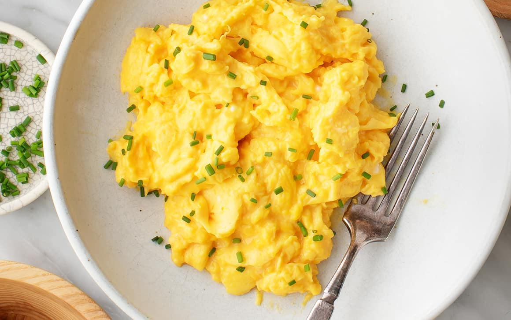

Home
Scrambled Eggs

Description
Scrambled eggs are a simple yet versatile dish enjoyed around the world for breakfast, brunch, or even a quick snack. Made by whisking eggs and cooking them over gentle heat, this dish can be as basic or as elaborate as you like. Its creamy, fluffy texture is achieved by continuously stirring the eggs while they cook, ensuring even heat distribution. Scrambled eggs pair wonderfully with toast, fresh fruit, or sautéed vegetables, making them a nutritious and satisfying option for any time of day.
What makes scrambled eggs so appealing is their adaptability to personal taste and dietary preferences. They can be enhanced with ingredients like cheese, herbs, or spices for added flavor, or kept plain for a more traditional experience. Scrambled eggs are not only quick to prepare but are also an excellent source of protein and essential nutrients, providing the energy needed to start the day right. Their simplicity and universal appeal have made them a favorite in households and restaurants alike.
Ingredients
- Eggs – 3 large
- Milk or Cream – 2 tablespoons (optional, for creaminess)
- Butter – 1 tablespoon
- Salt – To taste
- Black Pepper – To taste
- Fresh Herbs – Optional (e.g., chives, parsley, or dill, for garnish)
Steps
- Prepare the Ingredients
- Crack the eggs into a bowl and whisk them thoroughly with a fork or whisk.
- Add milk or cream (if using), and season with a pinch of salt and black pepper. Whisk again to combine.
- Heat the Pan
- Place a non-stick skillet over low to medium heat and add the butter.
- Allow the butter to melt and coat the bottom of the pan evenly.
- Cook the Eggs
- Pour the whisked eggs into the pan and let them sit undisturbed for a few seconds.
- Using a spatula, gently stir the eggs, scraping the cooked edges toward the center.
- Continue stirring until the eggs are softly set and slightly runny (they will continue to cook from residual heat).
- Serve
- Remove the pan from heat and transfer the scrambled eggs to a plate.
- Garnish with fresh herbs (if desired) and serve immediately with toast or other accompaniments.